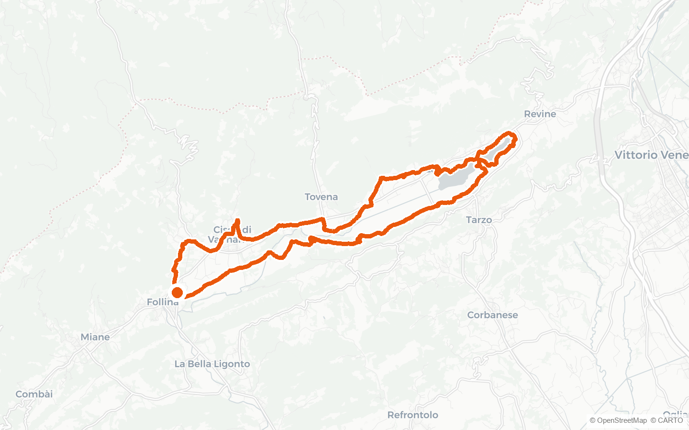
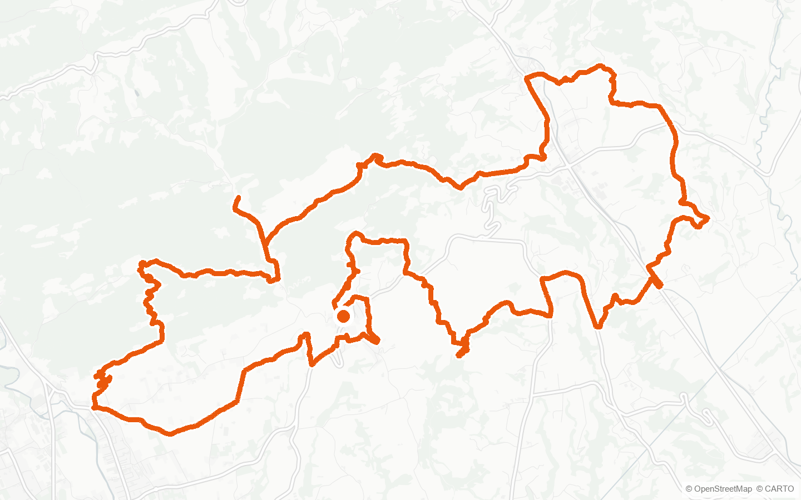
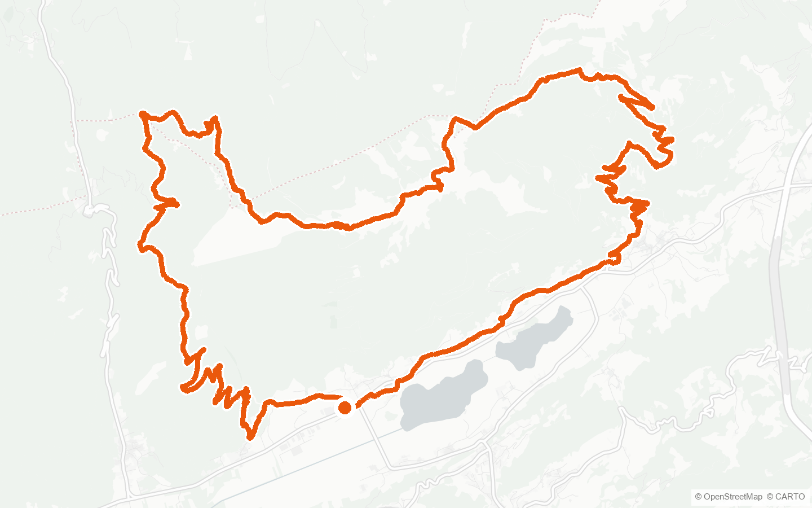

Arfanta Bike Rental
Guide du
Territoire
Les Collines du Prosecco à vélo électrique
Itinéraires, caves et saveurs
Bienvenue
Merci d'avoir choisi Arfanta Bike Rental. Vous êtes au cœur des Collines du Prosecco
de Conegliano et Valdobbiadene, patrimoine mondial de l'UNESCO : vignobles, villages,
lacs et abbayes à portée de pédale. Dans ce guide, vous trouverez nos itinéraires
conseillés et les meilleures adresses où vous arrêter pour déguster un verre et un
bon plat.
Où nous trouver
Arfanta Bike Rental — Via Pecol 22, Arfanta di Tarzo (TV)
Conseils pratiques
- Portez toujours le casque
- Emportez suffisamment d'eau
- Partez avec la batterie chargée et surveillez l'autonomie
- Enregistrez notre numéro : +39 392 8614635 (WhatsApp)
- Respectez les vignobles, les routes et les habitants — nous sommes les hôtes de ce territoire
Arfanta Bike Rental · Via Pecol 22, Arfanta di Tarzo (TV)
Nos itinéraires
Trois itinéraires en boucle à travers collines, vignobles et lacs, pour tous les
niveaux. Chaque parcours débute à quelques kilomètres du magasin : nous vous
indiquons comment rejoindre le point de départ.
Vous avez loué un vélo électrique de ville ? Les itinéraires de ce
guide sont conçus pour les vélos électriques tout-terrain. Demandez
en magasin : nous vous conseillerons volontiers une balade plus tranquille, adaptée
à votre vélo.
Légende des difficultés
- Facile peu de dénivelé, accessible à tous
- Moyen quelques montées, un peu de condition physique
- Difficile fort dénivelé, pour les cyclistes entraînés
Les données des itinéraires proviennent de traces GPS officielles (Wikiloc).
Facile e-MTB
Follina – Laghi di Revine
Distance 27,7 km
Dénivelé +263 m
Durée ≈ 2 h
Type Boucle
Boucle douce qui relie Follina — célèbre pour son abbaye cistercienne — aux miroirs
d'eau des Lacs de Revine. Une balade variée entre villages, prés et collines, avec
peu de dénivelé : l'itinéraire idéal pour profiter du paysage sans effort.
↳ Le départ se trouve à environ 6,4 km du magasin, dans le secteur de Follina.

1 / 3 · Follina – Laghi di Revine
Moyen e-MTB
Refrontolo – Val Trippera
Distance 33,5 km
Dénivelé +753 m
Durée ≈ 3 h
Type Boucle
Boucle à travers les collines de Refrontolo, où se dresse le Molinetto della Croda,
ancien moulin à eau parmi les plus photographiés de la Vénétie. Montées et descentes
panoramiques entre les vignobles du Prosecco, avec quelques portions plus exigeantes.
↳ Le départ se trouve à environ 3,5 km du magasin, dans le secteur de Refrontolo.

2 / 3 · Refrontolo – Val Trippera
Difficile e-MTB
Pian de le Femene – Col dei Gai
Distance 30,4 km
Dénivelé +1 133 m
Durée ≈ 3,5 h
Type Boucle
La montée panoramique par excellence : depuis Tarzo, on grimpe jusqu'au Pian de le
Femene, vaste plateau à 1 250 m d'altitude avec une vue extraordinaire sur les lacs
et la plaine vénitienne. Un parcours exigeant, la récompense de ceux qui ont du mollet.
↳ Le départ se trouve à environ 2,9 km du magasin, dans le secteur de Tarzo.
Attention : fort dénivelé — partez avec la batterie
entièrement chargée.

3 / 3 · Pian de le Femene – Col dei Gai
Les caves
Vous êtes au pays du Prosecco Superiore DOCG. Le long des itinéraires et aux
alentours, vous pouvez vous arrêter pour une dégustation : voici les caves que nous
vous conseillons.
Ville d'Arfanta
Arfanta di Tarzo — dégustations et visites du vignoble
villedarfanta.it
Azienda Agricola Antoniazzi Dario
Corbanese di Tarzo — Prosecco Superiore DOCG, vente directe
antoniazziprosecco.it
Azienda Agricola Gianfranco Tomasi
Tarzo — vins du terroir, salle de dégustation
Duca di Dolle
Rolle di Cison di Valmarino — dégustations panoramiques
ducadidolle.it
Cantine Gregoletto
Premaor di Miane — cave historique, visites guidées
Note interne (ne pas imprimer) : caves issues de
recherche web — vérifier coordonnées, horaires et possibilité de visite avec le propriétaire.
Les caves du territoire
Où manger
Après la balade, une bonne table. Une sélection d'adresses de la région, pour chaque
occasion. (€ économique · €€ moyen · €€€ raffiné)
€€
Il Posticino sul Lago
Revine Lago — restaurant et pizzeria, vue sur le lac
€€
Trattoria Da Adriana
Tarzo / Revine Lago — cuisine du terroir
€€
Locanda Codirosso
Tarzo — cuisine italienne
€€€
Albergo Ristorante Ai Pini
Tarzo — cuisine italienne
€€€
Il Capitello Ristorante
Tarzo — cuisine italienne et de poisson
€€€
Trattoria Vanzella
Tarzo — viande grillée
Note interne (ne pas imprimer) : noms et fourchettes
de prix à confirmer avec le propriétaire.
Où manger aux alentours
Bon voyage !
Arfanta Bike Rental
Via Pecol 22 · Arfanta di Tarzo (TV)
WhatsApp +39 392 8614635
Roulez prudemment et profitez des Collines.
Nous vous attendons pour la prochaine balade.
Collines du Prosecco de Conegliano et Valdobbiadene — Patrimoine mondial de l'UNESCO